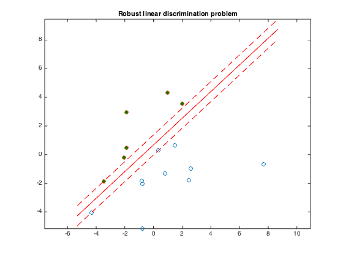

% Section 8.6.1, Boyd & Vandenberghe "Convex Optimization" % Original by Lieven Vandenberghe % Adapted for CVX by Joelle Skaf - 10/16/05 % (a figure is generated) % % The goal is to find a function f(x) = a'*x - b that classifies the points % {x_1,...,x_N} and {y_1,...,y_M} with maximal 'gap'. a and b can be % obtained by solving the following problem: % maximize t % s.t. a'*x_i - b >= t for i = 1,...,N % a'*y_i - b <= -t for i = 1,...,M % ||a||_2 <= 1 % data generation n = 2; randn('state',3); N = 10; M = 6; Y = [1.5+1*randn(1,M); 2*randn(1,M)]; X = [-1.5+1*randn(1,N); 2*randn(1,N)]; T = [-1 1; 1 1]; Y = T*Y; X = T*X; % Solution via CVX cvx_begin variables a(n) b(1) t(1) maximize (t) X'*a - b >= t; Y'*a - b <= -t; norm(a) <= 1; cvx_end % Displaying results linewidth = 0.5; % for the squares and circles t_min = min([X(1,:),Y(1,:)]); t_max = max([X(1,:),Y(1,:)]); tt = linspace(t_min-1,t_max+1,100); p = -a(1)*tt/a(2) + b/a(2); p1 = -a(1)*tt/a(2) + (b+t)/a(2); p2 = -a(1)*tt/a(2) + (b-t)/a(2); graph = plot(X(1,:),X(2,:), 'o', Y(1,:), Y(2,:), 'o'); set(graph(1),'LineWidth',linewidth); set(graph(2),'LineWidth',linewidth); set(graph(2),'MarkerFaceColor',[0 0.5 0]); hold on; plot(tt,p, '-r', tt,p1, '--r', tt,p2, '--r'); axis equal title('Robust linear discrimination problem'); % print -deps linsep.eps
Calling SDPT3 4.0: 20 variables, 5 equality constraints
For improved efficiency, SDPT3 is solving the dual problem.
------------------------------------------------------------
num. of constraints = 5
dim. of socp var = 3, num. of socp blk = 1
dim. of linear var = 17
number of nearly dependent constraints = 1
To remove these constraints, re-run sqlp.m with OPTIONS.rmdepconstr = 1.
*******************************************************************
SDPT3: Infeasible path-following algorithms
*******************************************************************
version predcorr gam expon scale_data
NT 1 0.000 1 0
it pstep dstep pinfeas dinfeas gap prim-obj dual-obj cputime
-------------------------------------------------------------------
0|0.000|0.000|1.7e+02|2.5e+01|2.1e+03| 3.464102e+00 0.000000e+00| 0:0:00| chol 1 1
1|0.936|0.836|1.1e+01|4.2e+00|1.7e+02| 9.334394e+00 -1.024335e+01| 0:0:00| chol 1 1
2|1.000|1.000|1.5e-06|1.0e-02|1.4e+01| 4.666412e+00 -9.694230e+00| 0:0:00| chol 1 1
3|0.862|0.893|2.2e-07|2.0e-03|1.8e+00| 1.649135e+00 -1.964725e-01| 0:0:00| chol 1 1
4|0.742|1.000|6.2e-08|1.0e-04|1.0e+00| 8.971670e-01 -1.371686e-01| 0:0:00| chol 1 1
5|0.974|0.909|6.2e-09|1.8e-05|1.7e-01| 6.131286e-01 4.465455e-01| 0:0:00| chol 1 1
6|0.602|1.000|5.4e-09|1.0e-06|7.4e-02| 5.551363e-01 4.808752e-01| 0:0:00| chol 1 1
7|0.988|0.961|1.5e-09|1.4e-07|5.6e-03| 5.146807e-01 5.090810e-01| 0:0:00| chol 1 1
8|0.988|0.984|5.3e-10|1.2e-08|7.6e-05| 5.112718e-01 5.111961e-01| 0:0:00| chol 1 1
9|0.985|0.965|1.8e-10|5.4e-10|1.8e-06| 5.112306e-01 5.112287e-01| 0:0:00| chol 1 1
10|1.000|0.994|2.7e-11|3.9e-11|1.4e-07| 5.112300e-01 5.112299e-01| 0:0:00| chol 1 1
11|1.000|0.997|2.5e-12|5.5e-12|1.8e-09| 5.112299e-01 5.112299e-01| 0:0:00|
stop: max(relative gap, infeasibilities) < 1.49e-08
-------------------------------------------------------------------
number of iterations = 11
primal objective value = 5.11229899e-01
dual objective value = 5.11229898e-01
gap := trace(XZ) = 1.75e-09
relative gap = 8.67e-10
actual relative gap = 8.63e-10
rel. primal infeas (scaled problem) = 2.50e-12
rel. dual " " " = 5.49e-12
rel. primal infeas (unscaled problem) = 0.00e+00
rel. dual " " " = 0.00e+00
norm(X), norm(y), norm(Z) = 1.1e+00, 1.2e+00, 8.5e+00
norm(A), norm(b), norm(C) = 1.7e+01, 2.0e+00, 2.0e+00
Total CPU time (secs) = 0.14
CPU time per iteration = 0.01
termination code = 0
DIMACS: 2.5e-12 0.0e+00 5.5e-12 0.0e+00 8.6e-10 8.7e-10
-------------------------------------------------------------------
------------------------------------------------------------
Status: Solved
Optimal value (cvx_optval): +0.51123
